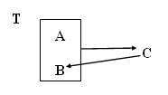
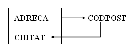

7. Forma Normal Boyce-Codd (FNBC)
Després de la creació de la 3FN es va observar, posteriorment, que podien haver anomalies que no eren abordades. De tota manera són unes redundàncies ja molt extranyes, i que de vegades no valdrà la pena considerar-les.
Són casos de taules que encara que estan en 3FN, mantenen una dependència d'un atribut secundari amb part de la clau. És l'únic cas de dependència transitiva que se'ns podia haver escapat. Gràficament és el següent cas:

La definició engloba la 3FN ja que les dependències transitives existeixen per mig d'atributs secundaris que no eren clau.
Si la clau està formada per un únic atribut i ja estava en 3FN, la taula està en FNBC (com succeïa amb la 2FN).
Exemple : Taula d'una guia de carrers
GUIA DE CARRERS
| ADREÇA | CIUTAT | CODPOST |
|---|---|---|
| C/ Pez, 2 | Benicarló | 12580 |
| C/ Luz, 5 | Benicarló | 12580 |
| C/ Mar, 4 | Castelló | 12005 |
| C/ Sol, 4 | Vinaròs | 12500 |
| C/ Sal, 9 | Castelló | 12004 |
| C/ Mar, 4 | Vinaròs | 12500 |
Les dependències funcionals que ens trobem són:
ADREÇA . CIUTAT →CODPOST
CODPOST →CIUTAT
Gràficament:

Si observem atentament les tuples d'una taula com aquesta, veurem que per a un mateix codi postal existeixen multitud de tuples que es corresponen amb la mateixa ciutat (tantes com adreces hi haja diferents), per tant existeix informació duplicada.
Si la informació, una vegada que es dóna d'alta no varia, és més rendible que la dependència funcional CODPOST → CIUTAT es trobe en una altra taula i que existisca una sola tupla per a cada codi postal.
A més a més, què succeeix si s'elimina la tupla amb adreça "C/ Sol, 4" de "Vinaròs" i la tupla "C/ Mar, 4" de "Vinaròs"? El que ocorre és que desapareix la relació entre el codi postal "12500" i "Vinaròs" i potser aquestes dades haurien de mantenir-se.
Si analitzem amb més detall la taula, veuríem que en realitat es pot substituir la clau principal per A + C (en l'exemple ADREÇA + CODPOSTAL), ja que si A + B ja era clau principal, com per cada valor de C només podem tenir un de B, la combinació A + C també podrà identificar unívocament cada ocurrència de la taula. Per tant, si substituirem la clau principal, ja no tindríem dubtes de com normalitzar la taula, que serà justament com veurem a continuació:
és equivalent a 
Posar en FNBC
L'algoritme de descomposició que s'aplica a una taula que no està en FNBC és el següent:
Si tenim una dependència funcional C → B on C i B són disjunts, C és una atribut no primari, i B forma part de la clau.
S'obtenen les projeccions:
A) Una primera taula T1 amb tots els atributs, excepte B (el que formava part de la clau principal); ara formarà part de la clau principal C.
B) Una segona taula T2 amb els atributs C i B , i serà la clau principal C
En l'exemple inicial d'aquesta pregunta quedarà:
A)

B)

En l'exemple de la GUIA DE CARRERS:

I quedarien amb la següent informació:
GUIA-ADREÇA
| ADREÇA | CODPOST |
|---|---|
| C/ Pez, 2 | 12580 |
| C/ Luz, 5 | 12580 |
| C/ Mar, 4 | 12005 |
| C/ Sol, 4 | 12500 |
| C/ Sal, 9 | 12004 |
| C/ Mar, 4 | 12500 |
GUIA-CODPOST
| CODPOST | CIUTAT |
|---|---|
| 12004 | Castelló |
| 12005 | Castelló |
| 12500 | Vinaròs |
| 12580 | Benicarló |
Per últim, observem les taules que ens queden. Voldrem tenir una taula de codis postals? Si el disseny és per a Correus o Telefònica, o una empresa gran que tinga molts client i els vol tenir distribuïts per codis postals, doncs segur que sí.
Però si es tracta d'una empresa no massa gran, i que tampoc interessa massa la distribució per codis postals, segurament mantenir una taula de codis postals pot semblar fins i tot ridícul. Aleshores, mantenir la taula en 3FN i assumir la miqueta de redundància que suposa no tenir-la en FNBC, pot ser fins i tot saludable. Per això s'ha comentat des del principi del tema la importància de normalitzar fins la 3FN, i la FNBC té una importància relativa.
De manera que la representació de les taules al model relacional quedaria de la manera següent:
GUIA-ADREÇA(adreça,codpos) GUIA-CODPOST(codpost,ciutat)
Llicenciat sota la Llicència Creative Commons Reconeixement NoComercial SenseObraDerivada 3.0